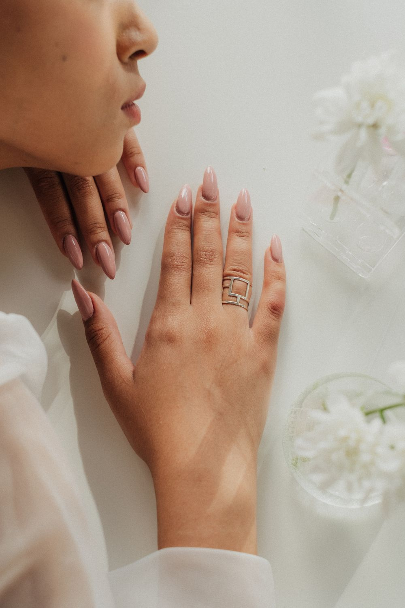
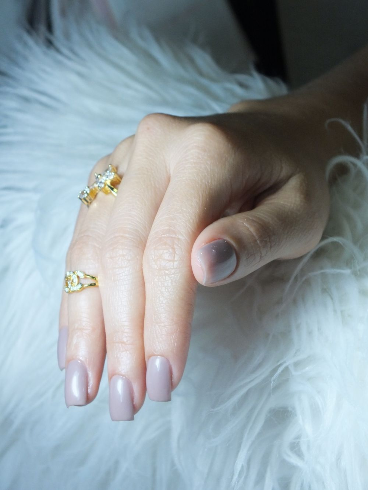
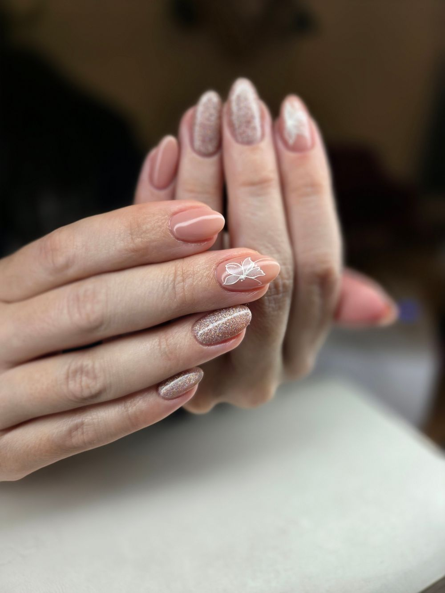
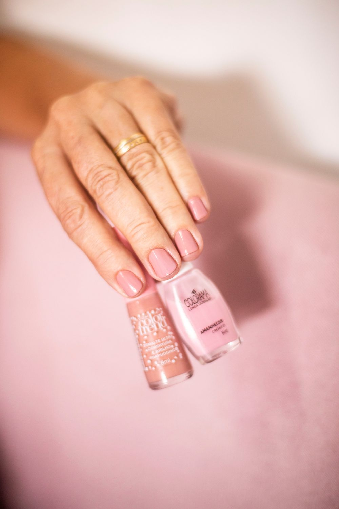
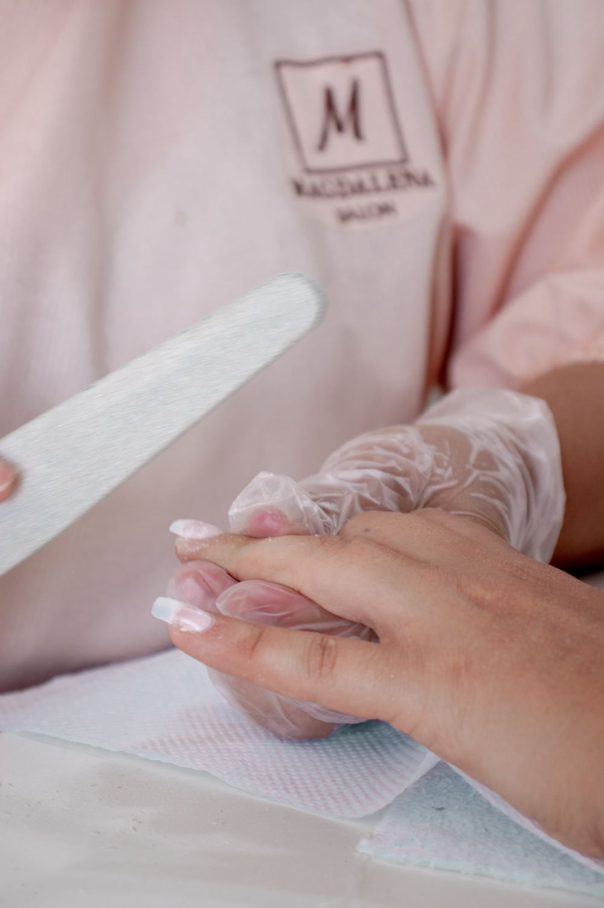
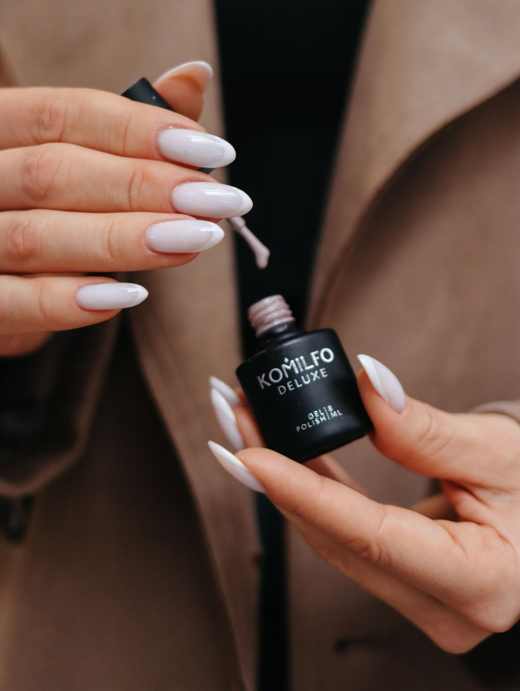
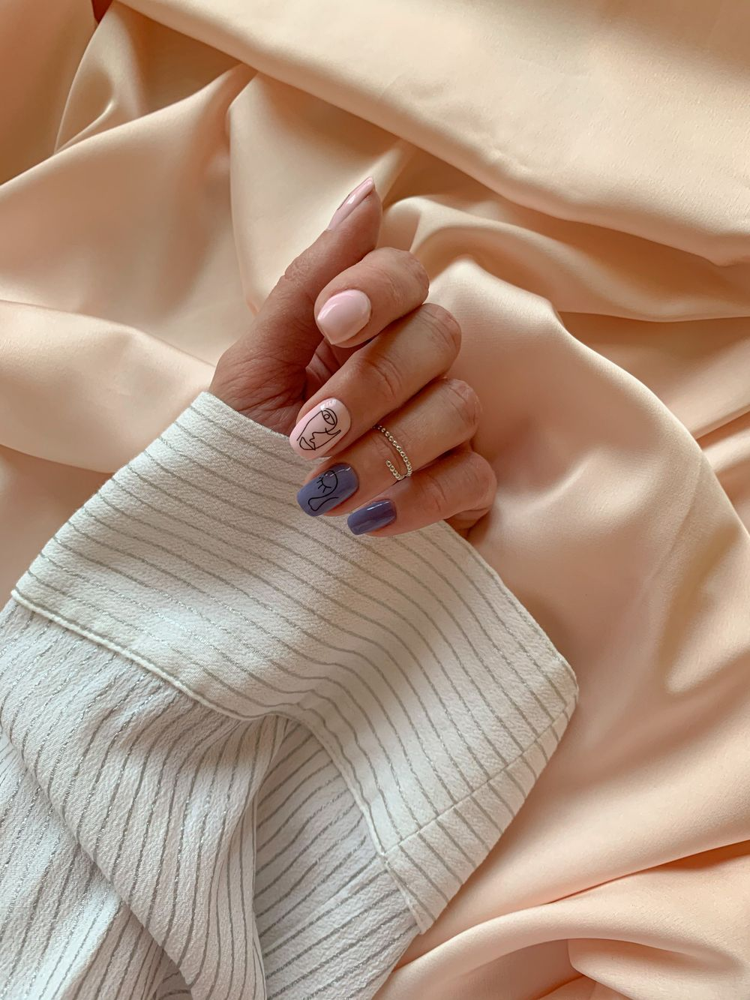

Soin
Manucure
Mise en forme, cuticules, soin de l’ongle naturel. Le geste de base, fait avec une minutie qui se voit.
Tarif sur demandeRéserver
Prothésiste ongulaire · Aix‑en‑Provence
Des ongles qui te ressemblent : minimalistes, lumineux, soignés jusqu’au bout des doigts. Un rendez‑vous cocooning, route d’Avignon.
Le savoir‑faire
On commence par parler. Longueur, forme, teinte, humeur du moment : Sandra s’adapte à tes envies, sans jamais t’imposer un style. « Vraiment à l’écoute », disent les clientes.
Le respect de l’ongle naturel est la règle de la maison. Préparation douce, gestes mesurés et produits de haute qualité : tes mains restent belles bien après le salon.
Un style minimaliste, des finitions nettes : un baby boomer dégradé comme un souffle, un chrome miroir qui accroche la lumière. Chaque détail est soigné, du premier au dernier doigt.
Très pointilleuse sur l’hygiène, dans une ambiance cocooning : tu viens pour tes ongles, tu repars aussi avec une vraie pause. « Méticuleuse, douce et pétillante. »
Prestations
Quatre signatures et une envie sur‑mesure. Les tarifs se confirment au moment de la demande de rendez‑vous.

Mise en forme, cuticules, soin de l’ongle naturel. Le geste de base, fait avec une minutie qui se voit.

Le dégradé laiteux, du rose poudré au blanc nacré. Naturel, lumineux, élégant à toutes les longueurs.
Un reflet champagne qui accroche la lumière. Sophistiqué, minimaliste, irrésistible au soleil.

Un détail, pas dix : un trait, un point, un éclat. Le style de Sandra, discret et précis.
Une photo, une couleur, une envie : apporte‑la, Sandra l’adapte à la forme de tes mains.
Galerie
Les réalisations de Sandra portent la mention « Sl Nails ». Les autres images illustrent l’ambiance et les teintes de la maison.




Avis Google
Je suis absolument ravie de mes ongles. Elle est d’un professionnalisme incroyable, douce, minutieuse et vraiment à l’écoute de mes envies. Chaque détail est soigné, et le résultat est toujours parfait ! On sent qu’elle travaille avec passion et précision. Je recommande Sandra les yeux fermés à toutes celles (et ceux !) qui veulent des ongles impeccables et un moment de détente.
Sandra est d’une douceur remarquable et prend grand soin de ses clientes. J’ai passé un moment très agréable et suis repartie avec des mains sublimes. Je suis ravie de cette expérience et j’ai trouvé ma nouvelle manucure à Aix !
Très pro, Sandra offre des soins impeccables avec des produits de haute qualité, dans une ambiance cocooning. Mes mains sont magnifiques : un vrai coup de cœur !
Sandra est très minutieuse dans son travail, elle écoute nos besoins et s’adapte facilement à nos demandes. Je la recommande vivement de par son professionnalisme et sa douceur.
J’ai enfin trouvé MA prothésiste ongulaire ❤️ Avec son style minimaliste, Sandra est un rayon de soleil, c’est un plaisir pour moi d’aller me faire faire les ongles. Elle est très pointilleuse sur l’hygiène et fait très attention à l’ongle naturel. Je n’ai qu’un mot à dire : allez‑y 😉
Rendez‑vous
Choisis ta prestation, ton jour et ton heure : ta demande part par SMS directement à Sandra, qui te confirme le créneau. Aucun compte à créer, aucune appli à installer.
Nous trouver
5220 route d’Avignon
13540 Aix‑en‑Provence
| Lundi | 9h – 18h |
|---|---|
| Mardi | 9h – 18h |
| Mercredi | 9h – 18h |
| Jeudi | 9h – 18h |
| Vendredi | 9h – 18h |
| Samedi | Fermé |
| Dimanche | Fermé |